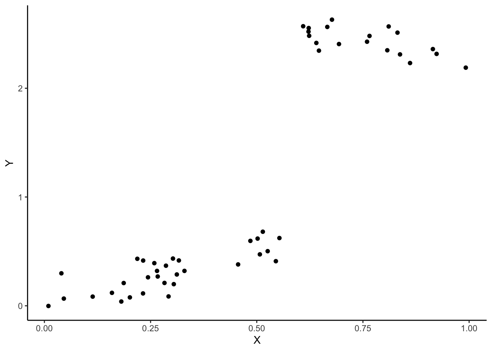
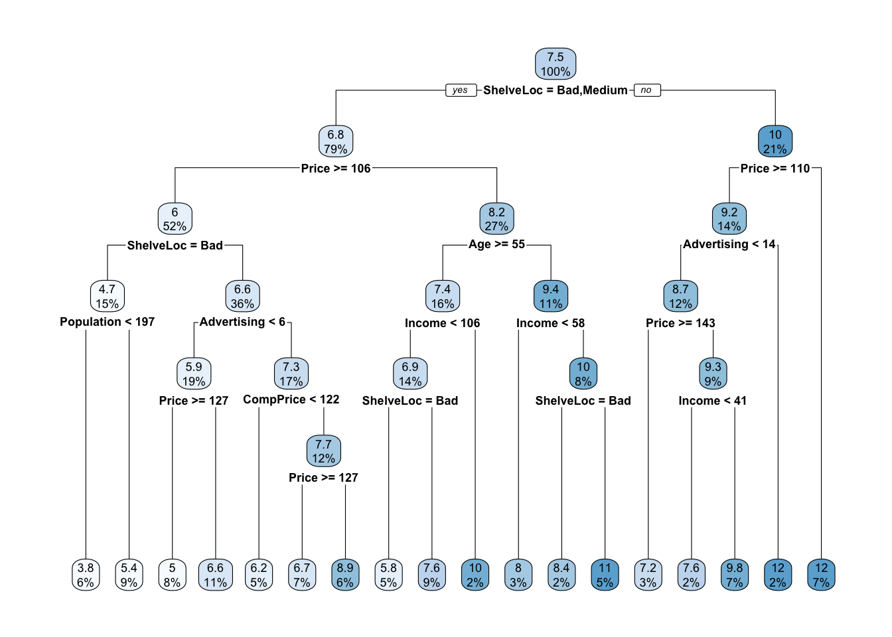

Chapitre 3 Arbres
Les méthodes par arbres sont des algorithmes où la prévision s’effectue à partir de moyennes locales. Plus précisément, étant donné un échantillon \((x_1,y_1)\dots,(x_n,y_n)\), l’approche consiste à :
- construire une partition de l’espace de variables explicatives (\(\mathbb R^p\)) ;
- prédire la sortie d’une nouvelle observation \(x\) en faisant :
- la moyenne des \(y_i\) pour les \(x_i\) qui sont dans la même classe que \(x\) si on est en régression ;
- un vote à la majorité parmi les \(y_i\) tels que les \(x_i\) qui sont dans la même classe que \(x\) si on est en classification.
Bien entendu toute la difficulté est de trouver la “bonne partition” pour le problème d’intérêt. Il existe un grand nombre d’algorithmes qui permettent de trouver une partition. Le plus connu est l’algorithme CART (Breiman et al. 1984) où la partition est construite par divisions successives au moyen d’hyperplan orthogonaux aux axes de \(\mathbb R^p\). L’algorithme est récursif : il va à chaque étape séparer un groupe d’observations (nœuds) en deux groupes (nœuds fils) en cherchant la meilleure variable et le meilleur seuil de coupure. Ce choix s’effectue à partir d’un critère d’impureté : la meilleure coupure est celle pour laquelle l’impureté des 2 nœuds fils sera minimale. Nous étudions cet algorithme dans cette partie.
3.1 Coupures CART en fonction de la nature des variables
Une partition CART s’obtient en séparant les observations en 2 selon une coupure parallèle aux axes puis en itérant ce procédé de séparation binaire sur les deux groupes… Par conséquent la première question à se poser est : pour un ensemble de données \((x_1,y_1),\dots,(x_n,y_n)\) fixé, comment obtenir la meilleure coupure ?
Comme souvent ce sont les données qui vont répondre à cette question. La sélection de la meilleur coupure s’effectue en introduisant une fonction d’impureté \(\mathcal I\) qui va mesurer le degrés d’hétérogénéité d’un nœud \(\mathcal N\). Cette fonction prendra de
- grandes valeurs pour les nœuds hétérogènes (les valeurs de \(Y\) diffèrent à l’intérieur du nœud) ;
- faibles valeurs pour les nœuds homogènes (les valeurs de \(Y\) sont proches à l’intérieur du nœud).
On utilise souvent comme fonction d’impureté :
- la variance en régression \[\mathcal I(\mathcal N)=\frac{1}{|\mathcal N|}\sum_{i:x_i\in\mathcal N}(y_i-\overline{y}_\mathcal N)^2,\] où \(\overline{y} _\mathcal N\) désigne la moyenne des \(y_i\) dans \(\mathcal N\).
- l’impureté de Gini en classification binaire \[\mathcal I(\mathcal N)=2p(\mathcal N)(1-p(\mathcal N))\] où \(p(\mathcal N)\) représente la proportion de 1 dans \(\mathcal N\).
Les coupures considérées par l’algorithme CART sont des hyperplans orthogonaux aux axes de \(\mathbb R^p\), choisir une coupure revient donc à choisir une variable \(j\) parmi les \(p\) variables explicatives et un seuil \(s\) dans \(\mathbb R\). On peut donc représenter une coupure par un couple \((j,s)\). Une fois l’impureté définie, on choisira la coupure \((j,s)\) qui maximise le gain d’impureté entre le noeud père et ses deux noeuds fils : \[\Delta(\mathcal I)=\mathbf P(\mathcal N)\mathcal I(\mathcal N)-(\mathbf P(\mathcal N_1(j,s))\mathcal I(\mathcal N_1(j,s))+\mathbf P(\mathcal N_2(j,s))\mathcal I(\mathcal N_2(j,s))\] où * \(\mathcal N_1(j,s)\) et \(\mathcal N_2(j,s)\) sont les 2 nœuds fils de \(\mathcal N\) engendrés par la coupure \((j,s)\) ; * \(\mathbf P(\mathcal N)\) représente la proportion d’observations dans le nœud \(\mathcal N\).
3.1.1 Arbres de régression
On considère le jeu de données suivant où le problème est d’expliquer la variable quantitative \(Y\) par la variable quantitative \(X\).
n <- 50
set.seed(1234)
X <- runif(n)
set.seed(5678)
Y <- 1*X*(X<=0.6)+(-1*X+3.2)*(X>0.6)+rnorm(n,sd=0.1)
data1 <- data.frame(X,Y)
ggplot(data1)+aes(x=X,y=Y)+geom_point()
A l’aide de la fonction rpart du package rpart, construire un arbre permettant d’expliquer \(Y\) par \(X\).
Visualiser l’arbre à l’aide des fonctions prp et rpart.plot du package rpart.plot.
Écrire l’estimateur associé à l’arbre.
Ajouter sur le graphe de la question 1 la partition définie par l’arbre ainsi que les valeurs prédites.
3.1.2 Arbres de classification
On considère les données suivantes où le problème est d’expliquer la variable binaire \(Y\) par deux variables quantitatives \(X_1\) et \(X_2\).
n <- 50
set.seed(12345)
X1 <- runif(n)
set.seed(5678)
X2 <- runif(n)
Y <- rep(0,n)
set.seed(54321)
Y[X1<=0.45] <- rbinom(sum(X1<=0.45),1,0.85)
set.seed(52432)
Y[X1>0.45] <- rbinom(sum(X1>0.45),1,0.15)
data2 <- data.frame(X1,X2,Y)
ggplot(data2)+aes(x=X1,y=X2,color=Y)+geom_point(size=2)+scale_x_continuous(name="")+
scale_y_continuous(name="")+theme_classic()
Construire un arbre permettant d’expliquer \(Y\) par \(X_1\) et \(X_2\). Représenter l’arbre et identifier l’éventuel problème.
Écrire la règle de classification ainsi que la fonction de score définies par l’arbre.
Ajouter sur le graphe de la question 1 la partition définie par l’arbre.
3.1.3 Entrée qualitative
On considère les données
n <- 100
X <- factor(rep(c("A","B","C","D"),n))
set.seed(1234)
Y[X=="A"] <- rbinom(sum(X=="A"),1,0.9)
Y[X=="B"] <- rbinom(sum(X=="B"),1,0.25)
Y[X=="C"] <- rbinom(sum(X=="C"),1,0.8)
Y[X=="D"] <- rbinom(sum(X=="D"),1,0.2)
Y <- as.factor(Y)
data3 <- data.frame(X,Y)Construire un arbre permettant d’expliquer \(Y\) par \(X\).
Expliquer la manière dont l’arbre est construit dans ce cadre là.
3.2 Élagage
Le procédé de coupe présenté précédemment permet de définir un très grand nombre d’arbres à partir d’un jeu de données (arbre sans coupure, avec une coupure, deux coupures…). Se pose alors la question de trouver le meilleur arbre parmi tous les arbres possibles. Une première idée serait de choisir parmi tous les arbres possibles celui qui optimise un critère de performance. Cette approche, bien que cohérente, n’est généralement pas possible à mettre en œuvre en pratique car le nombre d’arbres à considérer est souvent trop important.
La méthode CART propose une procédure permettant de choisir automatiquement un arbre en 3 étapes :
- On construit un arbre maximal (très profond) \(\mathcal T_{max}\) ;
- On sélectionne une suite d’arbres emboités : \[\mathcal T_{max}=\mathcal T_0\supset\mathcal T_1\supset\dots\supset \mathcal T_K.\] La sélection s’effectue en optimisant un critère Cout/complexité qui permet de réguler le compromis entre ajustement et complexité de l’arbre.
- On sélectionne un arbre dans cette sous-suite en optimisant un critère de performance.
Cette approche revient à choisir un sous-arbre de l’arbre \(\mathcal T_\text{max}\), c’est-à-dire à enlever des branches à \(T_\text{max}\), c’est pourquoi on parle d’élagage.
3.2.1 Élagage pour un problème de régression
On considère les données Carseats du package ISLR.
library(ISLR)
data(Carseats)
summary(Carseats)
Sales CompPrice Income
Min. : 0.000 Min. : 77 Min. : 21.00
1st Qu.: 5.390 1st Qu.:115 1st Qu.: 42.75
Median : 7.490 Median :125 Median : 69.00
Mean : 7.496 Mean :125 Mean : 68.66
3rd Qu.: 9.320 3rd Qu.:135 3rd Qu.: 91.00
Max. :16.270 Max. :175 Max. :120.00
Advertising Population Price
Min. : 0.000 Min. : 10.0 Min. : 24.0
1st Qu.: 0.000 1st Qu.:139.0 1st Qu.:100.0
Median : 5.000 Median :272.0 Median :117.0
Mean : 6.635 Mean :264.8 Mean :115.8
3rd Qu.:12.000 3rd Qu.:398.5 3rd Qu.:131.0
Max. :29.000 Max. :509.0 Max. :191.0
ShelveLoc Age Education Urban
Bad : 96 Min. :25.00 Min. :10.0 No :118
Good : 85 1st Qu.:39.75 1st Qu.:12.0 Yes:282
Medium:219 Median :54.50 Median :14.0
Mean :53.32 Mean :13.9
3rd Qu.:66.00 3rd Qu.:16.0
Max. :80.00 Max. :18.0
US
No :142
Yes:258
On cherche ici à expliquer la variable quantitative Sales par les autres variables.
Construire un arbre permettant de répondre au problème.
Expliquer les sorties de la fonction printcp appliquée à l’arbre de la question précédente et calculer le dernier terme de la colonne rel error.
Construire une suite d’arbres plus grandes en jouant sur les paramètres
cpetminsplitde la fonction rpart.Expliquer la sortie de la fonction plotcp appliquée à l’arbre de la question précédente.
Sélectionner le “meilleur” arbre dans la suite construite.
Visualiser l’arbre choisi (utiliser la fonction prune).
On souhaite prédire les valeurs de \(Y\) pour de nouveaux individus à partir de l’arbre sélectionné. Pour simplifier on considèrera ces 4 individus :
new_ind <- Carseats %>% slice(3,58,185,218) %>% dplyr::select(-Sales) new_ind CompPrice Income Advertising Population Price ShelveLoc 3 113 35 10 269 80 Medium 58 93 91 0 22 117 Bad 185 132 33 7 35 97 Medium 218 106 44 0 481 111 Medium Age Education Urban US 3 59 12 Yes Yes 58 75 11 Yes No 185 60 11 No Yes 218 70 14 No NoCalculer les valeurs prédites.
Séparer les données en un échantillon d’apprentissage de taille 250 et un échantillon test de taille 150.
On considère la suite d’arbres définie par
Dans cette suite, sélectionner
- un arbre très simple (avec 2 ou 3 coupures)
- un arbre très grand
- l’arbre optimal (avec la procédure d’élagage classique).
Calculer l’erreur quadratique de ces 3 arbres en utilisant l’échantillon test.
Refaire la comparaison avec une validation croisée 10 blocs.
3.2.2 Élagage en classification binaire et matrice de coût
On considère ici les mêmes données que précédemment mais on cherche à expliquer une version binaire de la variable Sales. Cette nouvelle variable, appelée High prend pour valeurs No si Sales est inférieur ou égal à 8, Yes sinon. On travaillera donc avec le jeu data1 défini ci-dessous.
High <- ifelse(Carseats$Sales<=8,"No","Yes")
data1 <- Carseats %>% dplyr::select(-Sales) %>% mutate(High)Construire un arbre permettant d’expliquer
Highpar les autres variables (sansSalesévidemment !) et expliquer les principales différences par rapport à la partie précédente précédente.Expliquer l’option
parmsdans la commande :Expliquer les sorties de la fonction printcp sur le premier arbre construit et retrouver la valeur du dernier terme de la colonne rel error.
Sélectionner un arbre optimal dans la suite.
On considère la suite d’arbres
Expliquer les sorties des commandes suivantes. On pourra notamment calculer le dernier terme de la colonne rel error de la table cptable.
tree2$parms $prior 1 2 0.59 0.41 $loss [,1] [,2] [1,] 0 1 [2,] 5 0 $split [1] 1 printcp(tree2) Classification tree: rpart(formula = High ~ ., data = data1, parms = list(loss = matrix(c(0, 5, 1, 0), ncol = 2)), cp = 0.01, minsplit = 2) Variables actually used in tree construction: [1] Advertising Age CompPrice Education [5] Income Population Price ShelveLoc Root node error: 236/400 = 0.59 n= 400 CP nsplit rel error xerror xstd 1 0.101695 0 1.00000 5.0000 0.20840 2 0.050847 2 0.79661 3.8136 0.20909 3 0.036017 3 0.74576 3.2034 0.20176 4 0.035311 5 0.67373 3.1271 0.20038 5 0.025424 9 0.50847 2.6144 0.19069 6 0.016949 11 0.45763 2.3475 0.18307 7 0.015537 16 0.37288 2.1992 0.17905 8 0.014831 21 0.28814 2.1992 0.17905 9 0.010593 23 0.25847 2.0466 0.17367 10 0.010000 25 0.23729 2.0297 0.17292Comparer les valeurs ajustées par les deux arbres considérés.
Références
Breiman, L., J. Friedman, R. Olshen, and C. Stone. 1984. Classification and Regression Trees. Wadsworth & Brooks.